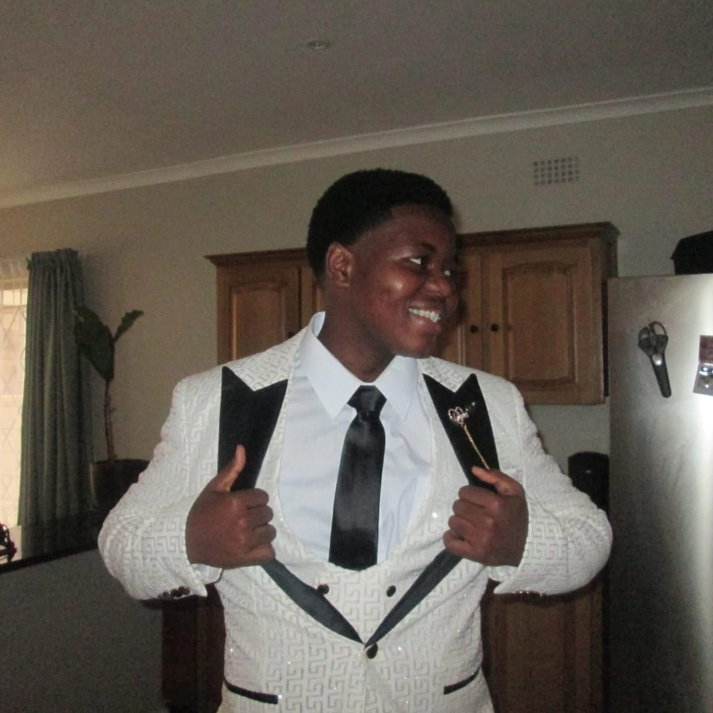

Aspiring Software Developer · IT Student
Computer science student building working systems from Java applications to relational database designs with a growing interest in software development and backend systems.
Hi, I'm Sihe Masinga, a software development student who enjoys solving problems, learning how technology works, and turning ideas into working applications. Through my studies, I've been developing my skills in Java, object-oriented programming, databases, and software development.
What I enjoy most about programming is the process of figuring things out. I like taking a problem, breaking it into smaller parts, and working towards a solution that actually works. My projects have also taught me that development involves more than writing code. Testing, debugging, making mistakes, and understanding why something went wrong are all part of improving.
I'm currently interested in backend development and databases, while keeping an open mind about where my career may take me. My goal is to keep learning, build practical projects, and become a confident software developer.
This portfolio showcases my work, skills, and progress throughout my studies.
